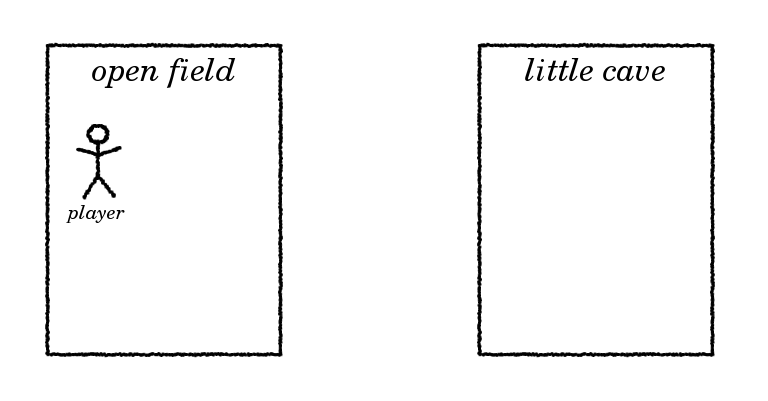

How to program a text adventure in C
by Ruud Helderman
<r.helderman@hccnet.nl>
Licensed under
MIT License
3. Locations
Traditionally, a text adventure is a virtual world
consisting of (many) different locations.
Though this is not essential
(some adventures take place in a single room!),
it is a good way to explain the use of
data structures.
We start by defining a
struct
to represent a location.
It contains two simple attributes to start with (more may follow later).
- description:
how the location is described in narrative text output by the program.
- tag:
how the location is recognized by the
parser.
| struct location {
const char *description;
const char *tag;
};
|
Next, we define an array of locations.
For now, we keep it really simple: just two locations.
We can use an initializer to immediately fill in all the static data.

| struct location locs[2] = {
{"an open field", "field"},
{"a little cave", "cave"}
};
|
Using the data from the array is simple.
For example, the following line of code will output "You are in an open field."
| printf("You are in %s.\n", locs[0].description);
|
Let’s put this into practice.
In the code sample from the previous chapter (parsexec.c),
we alter lines 4, 18 and 22 (slightly highlighted below).
| Sample output |
|---|
Welcome to Little Cave Adventure.
You are in an open field.
--> go cave
OK.
You are in a little cave.
--> go field
OK.
You are in an open field.
--> go field
You can't get much closer than this.
--> look around
You are in an open field.
--> go kitchen
I don't understand where you want to go.
--> quit
Bye!
|
| parsexec.c |
- #include <stdbool.h>
- #include <stdio.h>
- #include <string.h>
- #include "location.h"
- bool parseAndExecute(char *input)
- {
- char *verb = strtok(input, " \n");
- char *noun = strtok(NULL, " \n");
- if (verb != NULL)
- {
- if (strcmp(verb, "quit") == 0)
- {
- return false;
- }
- else if (strcmp(verb, "look") == 0)
- {
- executeLook(noun);
- }
- else if (strcmp(verb, "go") == 0)
- {
- executeGo(noun);
- }
- else
- {
- printf("I don't know how to '%s'.\n", verb);
- }
- }
- return true;
- }
|
Explanation:
- Line 4:
express your intent to use the functions defined in the module below.
- Line 18, 22:
call the new functions.
Next, we add a new module to the project.
| location.h |
- extern void executeLook(const char *noun);
- extern void executeGo(const char *noun);
|
| location.c |
- #include <stdio.h>
- #include <string.h>
- struct location {
- const char *description;
- const char *tag;
- }
- locs[] = {
- {"an open field", "field"},
- {"a little cave", "cave"}
- };
- #define numberOfLocations (sizeof locs / sizeof *locs)
- static unsigned locationOfPlayer = 0;
- void executeLook(const char *noun)
- {
- if (noun != NULL && strcmp(noun, "around") == 0)
- {
- printf("You are in %s.\n", locs[locationOfPlayer].description);
- }
- else
- {
- printf("I don't understand what you want to see.\n");
- }
- }
- void executeGo(const char *noun)
- {
- unsigned i;
- for (i = 0; i < numberOfLocations; i++)
- {
- if (noun != NULL && strcmp(noun, locs[i].tag) == 0)
- {
- if (i == locationOfPlayer)
- {
- printf("You can't get much closer than this.\n");
- }
- else
- {
- printf("OK.\n");
- locationOfPlayer = i;
- executeLook("around");
- }
- return;
- }
- }
- printf("I don't understand where you want to go.\n");
- }
|
Explanation:
- Line 4-11:
in C you can use a single statement to define a type (struct location),
declare a variable (locs) and fill it with its initial values.
- Line 8:
the array length (2) is not specified;
in this case, the C compiler will automatically determine the length
based on the number of elements in the initializer.
- Line 13:
as variable locs is
allocated statically,
we can let the compiler calculate the total number of locations;
very handy once we start adding more locations.
The calculation is rather obscure to look at,
so we give it a meaningful name numberOfLocations.
The calculation is performed at compile time, not in runtime,
so we can use
#define
without any performance penalty.
- Line 15:
the player’s location is initially 0
(indexing the first array element: the field);
change the value of locationOfPlayer to move to a different location
(as is done in line 43).
- Line 15, 31:
because numberOfLocations is an
unsigned integer,
we use the same type to declare variables locationOfPlayer and i.
- Line 44:
after the player has moved, the new location is immediately reported back,
as if the player entered the command ‘look around’.
Now the commands look around and go <location>
have really come to life!
Feel free to experiment by adding more locations.
Of course, the game is still far from perfect.
Right now, there is too much freedom: from every location,
the player can freely jump to any other location.
In chapter 6, we will show how to ‘connect’ locations.
But next up, we will start adding objects to the game.
Next chapter: 4. Objects
{kind=link}